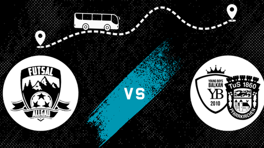

Vereinsnews
Aus dem Vereinsarchiv: die öffentlichen Beiträge der bisherigen Website aus dem Jahr 2025.

Jahreshauptversammlung 2025
Ein Jahr nach der Vereinsgründung steht die erste Generalversammlung an.
Bericht lesen ↗
Knappe Kiste im Spitzenspiel
YB Pfarrkirchen gegen Futsal Allgäu: ein enges Duell mit einem 5:4-Endstand.
Bericht lesen ↗
Futsal Allgäu fährt nächsten Sieg ein!
Ein torreiches Heimspiel: 8:5 gegen den SV Darmstadt 98.
Bericht lesen ↗
Vereinsleben · ArchivGemeinsam nach Pfarrkirchen
Rückblick auf den Aufruf zur Busfahrt zum Auswärtsspiel am 1. Februar 2025.
Bericht lesen ↗